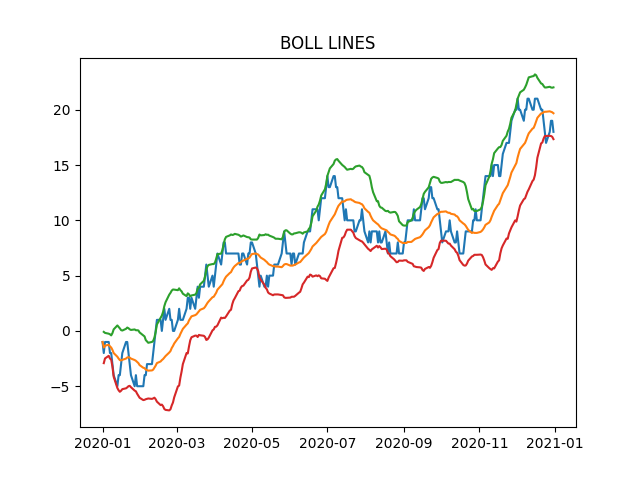

十、时序数据
一、时序中的基本对象
时间序列的概念在日常生活中十分常见，但对于一个具体的时序事件而言，可以从多个时间对象的角度来描述。例如 2020 年 9 月 7 日周一早上 8 点整需要到教室上课，这个课会在当天早上 10 点结束，其中包含了哪些时间概念？
-
第一，会出现时间戳（Date times）的概念，即’2020-9-7 08:00:00’和’2020-9-7 10:00:00’这两个时间点分别代表了上课和下课的时刻，在
pandas中称为Timestamp。同时，一系列的时间戳可以组成DatetimeIndex，而将它放到Series中后，Series的类型就变为了datetime64[ns]，如果有涉及时区则为datetime64[ns, tz]，其中 tz 是 timezone 的简写。 -
第二，会出现时间差（Time deltas）的概念，即上课需要的时间，两个
Timestamp做差就得到了时间差，pandas 中利用Timedelta来表示。类似的，一系列的时间差就组成了TimedeltaIndex， 而将它放到Series中后，Series的类型就变为了timedelta64[ns]。 -
第三，会出现时间段（Time spans）的概念，即在 8 点到 10 点这个区间都会持续地在上课，在
pandas利用Period来表示。类似的，一系列的时间段就组成了PeriodIndex， 而将它放到Series中后，Series的类型就变为了Period。 -
第四，会出现日期偏置（Date offsets）的概念，假设你只知道 9 月的第一个周一早上 8 点要去上课，但不知道具体的日期，那么就需要一个类型来处理此类需求。再例如，想要知道 2020 年 9 月 7 日后的第 30 个工作日是哪一天，那么时间差就解决不了你的问题，从而
pandas中的DateOffset就出现了。同时，pandas中没有为一列时间偏置专门设计存储类型，理由也很简单，因为需求比较奇怪，一般来说我们只需要对一批时间特征做一个统一的特殊日期偏置。
通过这个简单的例子，就能够容易地总结出官方文档中的这个 表格 ：
概念 | 单元素类型 | 数组类型 | pandas 数据类型 |
|---|---|---|---|
Date times |
|
|
|
Time deltas |
|
|
|
Time spans |
|
|
|
Date offsets |
|
|
|
由于时间段对象 Period/PeriodIndex 的使用频率并不高，因此将不进行讲解，而只涉及时间戳序列、时间差序列和日期偏置的相关内容。
二、时间戳
1. Timestamp 的构造与属性
单个时间戳的生成利用 pd.Timestamp 实现，一般而言的常见日期格式都能被成功地转换：
In [3]: ts = pd.Timestamp('2020/1/1')
In [4]: ts
Out[4]: Timestamp('2020-01-01 00:00:00')
In [5]: ts = pd.Timestamp('2020-1-1 08:10:30')
In [6]: ts
Out[6]: Timestamp('2020-01-01 08:10:30')
通过 year, month, day, hour, min, second 可以获取具体的数值：
In [7]: ts.year
Out[7]: 2020
In [8]: ts.month
Out[8]: 1
In [9]: ts.day
Out[9]: 1
In [10]: ts.hour
Out[10]: 8
In [11]: ts.minute
Out[11]: 10
In [12]: ts.second
Out[12]: 30
在 pandas 中，时间戳的最小精度为纳秒 ns ，由于使用了 64 位存储，可以表示的时间范围大约可以如下计算：
通过 pd.Timestamp.max 和 pd.Timestamp.min 可以获取时间戳表示的范围，可以看到确实表示的区间年数大小正如上述计算结果：
In [13]: pd.Timestamp.max
Out[13]: Timestamp('2262-04-11 23:47:16.854775807')
In [14]: pd.Timestamp.min
Out[14]: Timestamp('1677-09-21 00:12:43.145225')
In [15]: pd.Timestamp.max.year - pd.Timestamp.min.year
Out[15]: 585
2. Datetime 序列的生成
一组时间戳可以组成时间序列，可以用 to_datetime 和 date_range 来生成。其中， to_datetime 能够把一列时间戳格式的对象转换成为 datetime64[ns] 类型的时间序列：
In [16]: pd.to_datetime(['2020-1-1', '2020-1-3', '2020-1-6'])
Out[16]: DatetimeIndex(['2020-01-01', '2020-01-03', '2020-01-06'], dtype='datetime64[ns]', freq=None)
In [17]: df = pd.read_csv('data/learn_pandas.csv')
In [18]: s = pd.to_datetime(df.Test_Date)
In [19]: s.head()
Out[19]:
0 2019-10-05
1 2019-09-04
2 2019-09-12
3 2020-01-03
4 2019-11-06
Name: Test_Date, dtype: datetime64[ns]
在极少数情况，时间戳的格式不满足转换时，可以强制使用 format 进行匹配：
In [20]: temp = pd.to_datetime(['2020\\1\\1','2020\\1\\3'],format='%Y\\%m\\%d')
In [21]: temp
Out[21]: DatetimeIndex(['2020-01-01', '2020-01-03'], dtype='datetime64[ns]', freq=None)
注意上面由于传入的是列表，而非 pandas 内部的 Series ，因此返回的是 DatetimeIndex ，如果想要转为 datetime64[ns] 的序列，需要显式用 Series 转化：
另外，还存在一种把表的多列时间属性拼接转为时间序列的 to_datetime 操作，此时的列名必须和以下给定的时间关键词列名一致：
In [23]: df_date_cols = pd.DataFrame({'year': [2020, 2020],
....: 'month': [1, 1],
....: 'day': [1, 2],
....: 'hour': [10, 20],
....: 'minute': [30, 50],
....: 'second': [20, 40]})
....:
In [24]: pd.to_datetime(df_date_cols)
Out[24]:
0 2020-01-01 10:30:20
1 2020-01-02 20:50:40
dtype: datetime64[ns]
date_range 是一种生成连续间隔时间的一种方法，其重要的参数为 start, end, freq, periods ，它们分别表示开始时间，结束时间，时间间隔，时间戳个数。其中，四个中的三个参数决定了，那么剩下的一个就随之确定了。这里要注意，开始或结束日期如果作为端点则它会被包含：
In [25]: pd.date_range('2020-1-1','2020-1-21', freq='10D') # 包含
Out[25]: DatetimeIndex(['2020-01-01', '2020-01-11', '2020-01-21'], dtype='datetime64[ns]', freq='10D')
In [26]: pd.date_range('2020-1-1','2020-2-28', freq='10D')
Out[26]:
DatetimeIndex(['2020-01-01', '2020-01-11', '2020-01-21', '2020-01-31',
'2020-02-10', '2020-02-20'],
dtype='datetime64[ns]', freq='10D')
In [27]: pd.date_range('2020-1-1',
....: '2020-2-28', periods=6) # 由于结束日期无法取到，freq不为10天
....:
Out[27]:
DatetimeIndex(['2020-01-01 00:00:00', '2020-01-12 14:24:00',
'2020-01-24 04:48:00', '2020-02-04 19:12:00',
'2020-02-16 09:36:00', '2020-02-28 00:00:00'],
dtype='datetime64[ns]', freq=None)
这里的 freq 参数与 DateOffset 对象紧密相关，将在第四节介绍其具体的用法。
练一练
Timestamp 上定义了一个 value 属性，其返回的整数值代表了从 1970 年 1 月 1 日零点到给定时间戳相差的纳秒数，请利用这个属性构造一个随机生成给定日期区间内日期序列的函数。
最后，要介绍一种改变序列采样频率的方法 asfreq ，它能够根据给定的 freq 对序列进行类似于 reindex 的操作：
In [28]: s = pd.Series(np.random.rand(5),
....: index=pd.to_datetime([
....: '2020-1-%d'%i for i in range(1,10,2)]))
....:
In [29]: s.head()
Out[29]:
2020-01-01 0.836578
2020-01-03 0.678419
2020-01-05 0.711897
2020-01-07 0.487429
2020-01-09 0.604705
dtype: float64
In [30]: s.asfreq('D').head()
Out[30]:
2020-01-01 0.836578
2020-01-02 NaN
2020-01-03 0.678419
2020-01-04 NaN
2020-01-05 0.711897
Freq: D, dtype: float64
In [31]: s.asfreq('12H').head()
Out[31]:
2020-01-01 00:00:00 0.836578
2020-01-01 12:00:00 NaN
2020-01-02 00:00:00 NaN
2020-01-02 12:00:00 NaN
2020-01-03 00:00:00 0.678419
Freq: 12H, dtype: float64
datetime64[ns] 序列的最值与均值
前面提到了 datetime64[ns] 本质上可以理解为一个大整数，对于一个该类型的序列，可以使用 max, min, mean ，来取得最大时间戳、最小时间戳和 “平均” 时间戳。
3. dt 对象
如同 category, string 的序列上定义了 cat, str 来完成分类数据和文本数据的操作，在时序类型的序列上定义了 dt 对象来完成许多时间序列的相关操作。这里对于 datetime64[ns] 类型而言，可以大致分为三类操作：取出时间相关的属性、判断时间戳是否满足条件、取整操作。
第一类操作的常用属性包括： date, time, year, month, day, hour, minute, second, microsecond, nanosecond, dayofweek, dayofyear, weekofyear, daysinmonth, quarter ，其中 daysinmonth, quarter 分别表示该月一共有几天和季度。
In [32]: s = pd.Series(pd.date_range('2020-1-1','2020-1-3', freq='D'))
In [33]: s.dt.date
Out[33]:
0 2020-01-01
1 2020-01-02
2 2020-01-03
dtype: object
In [34]: s.dt.time
Out[34]:
0 00:00:00
1 00:00:00
2 00:00:00
dtype: object
In [35]: s.dt.day
Out[35]:
0 1
1 2
2 3
dtype: int64
In [36]: s.dt.daysinmonth
Out[36]:
0 31
1 31
2 31
dtype: int64
在这些属性中，经常使用的是 dayofweek ，它返回了周中的星期情况，周一为 0、周二为 1，以此类推：
此外，可以通过 month_name, day_name 返回英文的月名和星期名，注意它们是方法而不是属性：
In [38]: s.dt.month_name()
Out[38]:
0 January
1 January
2 January
dtype: object
In [39]: s.dt.day_name()
Out[39]:
0 Wednesday
1 Thursday
2 Friday
dtype: object
第二类判断操作主要用于测试是否为月 / 季 / 年的第一天或者最后一天：
In [40]: s.dt.is_year_start # 还可选 is_quarter/month_start
Out[40]:
0 True
1 False
2 False
dtype: bool
In [41]: s.dt.is_year_end # 还可选 is_quarter/month_end
Out[41]:
0 False
1 False
2 False
dtype: bool
第三类的取整操作包含 round, ceil, floor ，它们的公共参数为 freq ，常用的包括 H, min, S （小时、分钟、秒），所有可选的 freq 可参考 此处 。
In [42]: s = pd.Series(pd.date_range('2020-1-1 20:35:00',
....: '2020-1-1 22:35:00',
....: freq='45min'))
....:
In [43]: s
Out[43]:
0 2020-01-01 20:35:00
1 2020-01-01 21:20:00
2 2020-01-01 22:05:00
dtype: datetime64[ns]
In [44]: s.dt.round('1H')
Out[44]:
0 2020-01-01 21:00:00
1 2020-01-01 21:00:00
2 2020-01-01 22:00:00
dtype: datetime64[ns]
In [45]: s.dt.ceil('1H')
Out[45]:
0 2020-01-01 21:00:00
1 2020-01-01 22:00:00
2 2020-01-01 23:00:00
dtype: datetime64[ns]
In [46]: s.dt.floor('1H')
Out[46]:
0 2020-01-01 20:00:00
1 2020-01-01 21:00:00
2 2020-01-01 22:00:00
dtype: datetime64[ns]
4. 时间戳的切片与索引
一般而言，时间戳序列作为索引使用。如果想要选出某个子时间戳序列，第一类方法是利用 dt 对象和布尔条件联合使用，另一种方式是利用切片，后者常用于连续时间戳。下面，举一些例子说明：
In [47]: s = pd.Series(np.random.randint(2,size=366),
....: index=pd.date_range(
....: '2020-01-01','2020-12-31'))
....:
In [48]: idx = pd.Series(s.index).dt
In [49]: s.head()
Out[49]:
2020-01-01 1
2020-01-02 1
2020-01-03 0
2020-01-04 1
2020-01-05 0
Freq: D, dtype: int32
Example1：每月的第一天或者最后一天
In [50]: s[(idx.is_month_start|idx.is_month_end).values].head()
Out[50]:
2020-01-01 1
2020-01-31 0
2020-02-01 1
2020-02-29 1
2020-03-01 0
dtype: int32
Example2：双休日
In [51]: s[idx.dayofweek.isin([5,6]).values].head()
Out[51]:
2020-01-04 1
2020-01-05 0
2020-01-11 0
2020-01-12 1
2020-01-18 1
dtype: int32
Example3：取出单日值
Example4：取出七月
In [54]: s['2020-07'].head()
Out[54]:
2020-07-01 0
2020-07-02 1
2020-07-03 0
2020-07-04 0
2020-07-05 0
Freq: D, dtype: int32
Example5：取出 5 月初至 7 月 15 日
In [55]: s['2020-05':'2020-7-15'].head()
Out[55]:
2020-05-01 0
2020-05-02 1
2020-05-03 0
2020-05-04 1
2020-05-05 1
Freq: D, dtype: int32
In [56]: s['2020-05':'2020-7-15'].tail()
Out[56]:
2020-07-11 0
2020-07-12 0
2020-07-13 1
2020-07-14 0
2020-07-15 1
Freq: D, dtype: int32
三、时间差
1. Timedelta 的生成
正如在第一节中所说，时间差可以理解为两个时间戳的差，这里也可以通过 pd.Timedelta 来构造：
In [57]: pd.Timestamp('20200102 08:00:00')-pd.Timestamp('20200101 07:35:00')
Out[57]: Timedelta('1 days 00:25:00')
In [58]: pd.Timedelta(days=1, minutes=25) # 需要注意加s
Out[58]: Timedelta('1 days 00:25:00')
In [59]: pd.Timedelta('1 days 25 minutes') # 字符串生成
Out[59]: Timedelta('1 days 00:25:00')
生成时间差序列的主要方式是 pd.to_timedelta ，其类型为 timedelta64[ns] ：
In [60]: s = pd.to_timedelta(df.Time_Record)
In [61]: s.head()
Out[61]:
0 0 days 00:04:34
1 0 days 00:04:20
2 0 days 00:05:22
3 0 days 00:04:08
4 0 days 00:05:22
Name: Time_Record, dtype: timedelta64[ns]
与 date_range 一样，时间差序列也可以用 timedelta_range 来生成，它们两者具有一致的参数：
In [62]: pd.timedelta_range('0s', '1000s', freq='6min')
Out[62]: TimedeltaIndex(['0 days 00:00:00', '0 days 00:06:00', '0 days 00:12:00'], dtype='timedelta64[ns]', freq='6T')
In [63]: pd.timedelta_range('0s', '1000s', periods=3)
Out[63]: TimedeltaIndex(['0 days 00:00:00', '0 days 00:08:20', '0 days 00:16:40'], dtype='timedelta64[ns]', freq=None)
对于 Timedelta 序列，同样也定义了 dt 对象，上面主要定义了的属性包括 days, seconds, mircroseconds, nanoseconds ，它们分别返回了对应的时间差特征。需要注意的是，这里的 seconds 不是指单纯的秒，而是对天数取余后剩余的秒数：
如果不想对天数取余而直接对应秒数，可以使用 total_seconds
In [65]: s.dt.total_seconds().head()
Out[65]:
0 274.0
1 260.0
2 322.0
3 248.0
4 322.0
Name: Time_Record, dtype: float64
与时间戳序列类似，取整函数也是可以在 dt 对象上使用的：
In [66]: pd.to_timedelta(df.Time_Record).dt.round('min').head()
Out[66]:
0 0 days 00:05:00
1 0 days 00:04:00
2 0 days 00:05:00
3 0 days 00:04:00
4 0 days 00:05:00
Name: Time_Record, dtype: timedelta64[ns]
2. Timedelta 的运算
时间差支持的常用运算有三类：与标量的乘法运算、与时间戳的加减法运算、与时间差的加减法与除法运算：
In [67]: td1 = pd.Timedelta(days=1)
In [68]: td2 = pd.Timedelta(days=3)
In [69]: ts = pd.Timestamp('20200101')
In [70]: td1 * 2
Out[70]: Timedelta('2 days 00:00:00')
In [71]: td2 - td1
Out[71]: Timedelta('2 days 00:00:00')
In [72]: ts + td1
Out[72]: Timestamp('2020-01-02 00:00:00')
In [73]: ts - td1
Out[73]: Timestamp('2019-12-31 00:00:00')
这些运算都可以移植到时间差的序列上：
In [74]: td1 = pd.timedelta_range(start='1 days', periods=5)
In [75]: td2 = pd.timedelta_range(start='12 hours',
....: freq='2H',
....: periods=5)
....:
In [76]: ts = pd.date_range('20200101', '20200105')
In [77]: td1 * 5
Out[77]: TimedeltaIndex(['5 days', '10 days', '15 days', '20 days', '25 days'], dtype='timedelta64[ns]', freq='5D')
In [78]: td1 * pd.Series(list(range(5))) # 逐个相乘
Out[78]:
0 0 days
1 2 days
2 6 days
3 12 days
4 20 days
dtype: timedelta64[ns]
In [79]: td1 - td2
Out[79]:
TimedeltaIndex(['0 days 12:00:00', '1 days 10:00:00', '2 days 08:00:00',
'3 days 06:00:00', '4 days 04:00:00'],
dtype='timedelta64[ns]', freq=None)
In [80]: td1 + pd.Timestamp('20200101')
Out[80]:
DatetimeIndex(['2020-01-02', '2020-01-03', '2020-01-04', '2020-01-05',
'2020-01-06'],
dtype='datetime64[ns]', freq='D')
In [81]: td1 + ts # 逐个相加
Out[81]:
DatetimeIndex(['2020-01-02', '2020-01-04', '2020-01-06', '2020-01-08',
'2020-01-10'],
dtype='datetime64[ns]', freq=None)
四、日期偏置
1. Offset 对象
日期偏置是一种和日历相关的特殊时间差，例如回到第一节中的两个问题：如何求 2020 年 9 月第一个周一的日期，以及如何求 2020 年 9 月 7 日后的第 30 个工作日是哪一天。
In [82]: pd.Timestamp('20200831') + pd.offsets.WeekOfMonth(week=0,weekday=0)
Out[82]: Timestamp('2020-09-07 00:00:00')
In [83]: pd.Timestamp('20200907') + pd.offsets.BDay(30)
Out[83]: Timestamp('2020-10-19 00:00:00')
从上面的例子中可以看到， Offset 对象在 pd.offsets 中被定义。当使用 + 时获取离其最近的下一个日期，当使用 - 时获取离其最近的上一个日期：
In [84]: pd.Timestamp('20200831') - pd.offsets.WeekOfMonth(week=0,weekday=0)
Out[84]: Timestamp('2020-08-03 00:00:00')
In [85]: pd.Timestamp('20200907') - pd.offsets.BDay(30)
Out[85]: Timestamp('2020-07-27 00:00:00')
In [86]: pd.Timestamp('20200907') + pd.offsets.MonthEnd()
Out[86]: Timestamp('2020-09-30 00:00:00')
常用的日期偏置如下可以查阅这里的 文档 描述。在文档罗列的 Offset 中，需要介绍一个特殊的 Offset 对象 CDay ，其中的 holidays, weekmask 参数能够分别对自定义的日期和星期进行过滤，前者传入了需要过滤的日期列表，后者传入的是三个字母的星期缩写构成的星期字符串，其作用是只保留字符串中出现的星期：
In [87]: my_filter = pd.offsets.CDay(n=1,weekmask='Wed Fri',holidays=['20200109'])
In [88]: dr = pd.date_range('20200108', '20200111')
In [89]: dr.to_series().dt.dayofweek
Out[89]:
2020-01-08 2
2020-01-09 3
2020-01-10 4
2020-01-11 5
Freq: D, dtype: int64
In [90]: [i + my_filter for i in dr]
Out[90]:
[Timestamp('2020-01-10 00:00:00'),
Timestamp('2020-01-10 00:00:00'),
Timestamp('2020-01-15 00:00:00'),
Timestamp('2020-01-15 00:00:00')]
上面的例子中， n 表示增加一天 CDay ， dr 中的第一天为 20200108 ，但由于下一天 20200109 被排除了，并且 20200110 是合法的周五，因此转为 20200110 ，其他后面的日期处理类似。
不要使用部分 Offset
在当前版本下由于一些 bug ，不要使用 Day 级别以下的 Offset 对象，比如 Hour, Second 等，请使用对应的 Timedelta 对象来代替。
2. 偏置字符串
前面提到了关于 date_range 的 freq 取值可用 Offset 对象，同时在 pandas 中几乎每一个 Offset 对象绑定了日期偏置字符串（ frequencies strings/offset aliases ），可以指定 Offset 对应的字符串来替代使用。下面举一些常见的例子。
In [91]: pd.date_range('20200101','20200331', freq='MS') # 月初
Out[91]: DatetimeIndex(['2020-01-01', '2020-02-01', '2020-03-01'], dtype='datetime64[ns]', freq='MS')
In [92]: pd.date_range('20200101','20200331', freq='M') # 月末
Out[92]: DatetimeIndex(['2020-01-31', '2020-02-29', '2020-03-31'], dtype='datetime64[ns]', freq='M')
In [93]: pd.date_range('20200101','20200110', freq='B') # 工作日
Out[93]:
DatetimeIndex(['2020-01-01', '2020-01-02', '2020-01-03', '2020-01-06',
'2020-01-07', '2020-01-08', '2020-01-09', '2020-01-10'],
dtype='datetime64[ns]', freq='B')
In [94]: pd.date_range('20200101','20200201', freq='W-MON') # 周一
Out[94]: DatetimeIndex(['2020-01-06', '2020-01-13', '2020-01-20', '2020-01-27'], dtype='datetime64[ns]', freq='W-MON')
In [95]: pd.date_range('20200101','20200201',
....: freq='WOM-1MON') # 每月第一个周一
....:
Out[95]: DatetimeIndex(['2020-01-06'], dtype='datetime64[ns]', freq='WOM-1MON')
上面的这些字符串，等价于使用如下的 Offset 对象：
In [96]: pd.date_range('20200101','20200331',
....: freq=pd.offsets.MonthBegin())
....:
Out[96]: DatetimeIndex(['2020-01-01', '2020-02-01', '2020-03-01'], dtype='datetime64[ns]', freq='MS')
In [97]: pd.date_range('20200101','20200331',
....: freq=pd.offsets.MonthEnd())
....:
Out[97]: DatetimeIndex(['2020-01-31', '2020-02-29', '2020-03-31'], dtype='datetime64[ns]', freq='M')
In [98]: pd.date_range('20200101','20200110', freq=pd.offsets.BDay())
Out[98]:
DatetimeIndex(['2020-01-01', '2020-01-02', '2020-01-03', '2020-01-06',
'2020-01-07', '2020-01-08', '2020-01-09', '2020-01-10'],
dtype='datetime64[ns]', freq='B')
In [99]: pd.date_range('20200101','20200201',
....: freq=pd.offsets.CDay(weekmask='Mon'))
....:
Out[99]: DatetimeIndex(['2020-01-06', '2020-01-13', '2020-01-20', '2020-01-27'], dtype='datetime64[ns]', freq='C')
In [100]: pd.date_range('20200101','20200201',
.....: freq=pd.offsets.WeekOfMonth(week=0,weekday=0))
.....:
Out[100]: DatetimeIndex(['2020-01-06'], dtype='datetime64[ns]', freq='WOM-1MON')
关于时区问题的说明
各类时间对象的开发，除了使用 python 内置的 datetime 模块， pandas 还利用了 dateutil 模块，很大一部分是为了处理时区问题。总所周知，我国是没有夏令时调整时间一说的，但有些国家会有这种做法，导致了相对而言一天里可能会有 23/24/25 个小时，也就是 relativedelta ，这使得 Offset 对象和 Timedelta 对象有了对同一问题处理产生不同结果的现象，其中的规则也较为复杂，官方文档的写法存在部分描述错误，并且难以对描述做出统一修正，因为牵涉到了 Offset 相关的很多组件。因此，本教程完全不考虑时区处理，如果对时区处理的时间偏置有兴趣了解讨论，可以联系我或者参见 这里 的讨论。
五、时序中的滑窗与分组
1. 滑动窗口
所谓时序的滑窗函数，即把滑动窗口用 freq 关键词代替，下面给出一个具体的应用案例：在股票市场中有一个指标为 BOLL 指标，它由中轨线、上轨线、下轨线这三根线构成，具体的计算方法分别是 N 日均值线、 N 日均值加两倍 N 日标准差线、 N 日均值减两倍 N 日标准差线。利用 rolling 对象计算 N=30 的 BOLL 指标可以如下写出：
In [101]: import matplotlib.pyplot as plt
In [102]: idx = pd.date_range('20200101', '20201231', freq='B')
In [103]: np.random.seed(2020)
In [104]: data = np.random.randint(-1,2,len(idx)).cumsum() # 随机游动构造模拟序列
In [105]: s = pd.Series(data,index=idx)
In [106]: s.head()
Out[106]:
2020-01-01 -1
2020-01-02 -2
2020-01-03 -1
2020-01-06 -1
2020-01-07 -2
Freq: B, dtype: int32
In [107]: r = s.rolling('30D')
In [108]: plt.plot(s)
Out[108]: [<matplotlib.lines.Line2D at 0x1363008af70>]
In [109]: plt.title('BOLL LINES')
Out[109]: Text(0.5, 1.0, 'BOLL LINES')
In [110]: plt.plot(r.mean())
Out[110]: [<matplotlib.lines.Line2D at 0x136300a9070>]
In [111]: plt.plot(r.mean()+r.std()*2)
Out[111]: [<matplotlib.lines.Line2D at 0x136300a9250>]
In [112]: plt.plot(r.mean()-r.std()*2)
Out[112]: [<matplotlib.lines.Line2D at 0x136300a9550>]

对于 shift 函数而言，作用在 datetime64 为索引的序列上时，可以指定 freq 单位进行滑动：
In [113]: s.shift(freq='50D').head()
Out[113]:
2020-02-20 -1
2020-02-21 -2
2020-02-22 -1
2020-02-25 -1
2020-02-26 -2
dtype: int32
另外， datetime64[ns] 的序列进行 diff 后就能够得到 timedelta64[ns] 的序列，这能够使用户方便地观察有序时间序列的间隔：
In [114]: my_series = pd.Series(s.index)
In [115]: my_series.head()
Out[115]:
0 2020-01-01
1 2020-01-02
2 2020-01-03
3 2020-01-06
4 2020-01-07
dtype: datetime64[ns]
In [116]: my_series.diff(1).head()
Out[116]:
0 NaT
1 1 days
2 1 days
3 3 days
4 1 days
dtype: timedelta64[ns]
2. 重采样
重采样对象 resample 和第四章中分组对象 groupby 的用法类似，前者是针对时间序列的分组计算而设计的分组对象。
例如，对上面的序列计算每 10 天的均值：
In [117]: s.resample('10D').mean().head()
Out[117]:
2020-01-01 -2.000000
2020-01-11 -3.166667
2020-01-21 -3.625000
2020-01-31 -4.000000
2020-02-10 -0.375000
Freq: 10D, dtype: float64
同时，如果没有内置定义的处理函数，可以通过 apply 方法自定义：
In [118]: s.resample('10D').apply(lambda x:x.max()-x.min()).head() # 极差
Out[118]:
2020-01-01 3
2020-01-11 4
2020-01-21 4
2020-01-31 2
2020-02-10 4
Freq: 10D, dtype: int32
在 resample 中要特别注意组边界值的处理情况，默认情况下起始值的计算方法是从最小值时间戳对应日期的午夜 00:00:00 开始增加 freq ，直到不超过该最小时间戳的最大时间戳，由此对应的时间戳为起始值，然后每次累加 freq 参数作为分割结点进行分组，区间情况为左闭右开。下面构造一个不均匀的例子：
In [119]: idx = pd.date_range('20200101 8:26:35', '20200101 9:31:58', freq='77s')
In [120]: data = np.random.randint(-1,2,len(idx)).cumsum()
In [121]: s = pd.Series(data,index=idx)
In [122]: s.head()
Out[122]:
2020-01-01 08:26:35 -1
2020-01-01 08:27:52 -1
2020-01-01 08:29:09 -2
2020-01-01 08:30:26 -3
2020-01-01 08:31:43 -4
Freq: 77S, dtype: int32
下面对应的第一个组起始值为 08:24:00 ，其是从当天 0 点增加 72 个 freq=7 min 得到的，如果再增加一个 freq 则超出了序列的最小时间戳 08:26:35 ：
In [123]: s.resample('7min').mean().head()
Out[123]:
2020-01-01 08:24:00 -1.750000
2020-01-01 08:31:00 -2.600000
2020-01-01 08:38:00 -2.166667
2020-01-01 08:45:00 0.200000
2020-01-01 08:52:00 2.833333
Freq: 7T, dtype: float64
有时候，用户希望从序列的最小时间戳开始依次增加 freq 进行分组，此时可以指定 origin 参数为 start ：
In [124]: s.resample('7min', origin='start').mean().head()
Out[124]:
2020-01-01 08:26:35 -2.333333
2020-01-01 08:33:35 -2.400000
2020-01-01 08:40:35 -1.333333
2020-01-01 08:47:35 1.200000
2020-01-01 08:54:35 3.166667
Freq: 7T, dtype: float64
在返回值中，要注意索引一般是取组的第一个时间戳，但 M, A, Q, BM, BA, BQ, W 这七个是取对应区间的最后一个时间戳：
In [125]: s = pd.Series(np.random.randint(2,size=366),
.....: index=pd.date_range('2020-01-01',
.....: '2020-12-31'))
.....:
In [126]: s.resample('M').mean().head()
Out[126]:
2020-01-31 0.451613
2020-02-29 0.448276
2020-03-31 0.516129
2020-04-30 0.566667
2020-05-31 0.451613
Freq: M, dtype: float64
In [127]: s.resample('MS').mean().head() # 结果一样，但索引不同
Out[127]:
2020-01-01 0.451613
2020-02-01 0.448276
2020-03-01 0.516129
2020-04-01 0.566667
2020-05-01 0.451613
Freq: MS, dtype: float64
六、练习
Ex1：太阳辐射数据集
现有一份关于太阳辐射的数据集：
In [128]: df = pd.read_csv('data/solar.csv', usecols=['Data','Time',
.....: 'Radiation','Temperature'])
.....:
In [129]: df.head(3)
Out[129]:
Data Time Radiation Temperature
0 9/29/2016 12:00:00 AM 23:55:26 1.21 48
1 9/29/2016 12:00:00 AM 23:50:23 1.21 48
2 9/29/2016 12:00:00 AM 23:45:26 1.23 48
-
将
Datetime, Time合并为一个时间列Datetime，同时把它作为索引后排序。 -
每条记录时间的间隔显然并不一致，请解决如下问题：
a. 找出间隔时间的前三个最大值所对应的三组时间戳。
b. 是否存在一个大致的范围，使得绝大多数的间隔时间都落在这个区间中？如果存在，请对此范围内的样本间隔秒数画出柱状图，设置
bins=50。 -
求如下指标对应的
Series：a. 温度与辐射量的 6 小时滑动相关系数
b. 以三点、九点、十五点、二十一点为分割，该观测所在时间区间的温度均值序列
c. 每个观测 6 小时前的辐射量（一般而言不会恰好取到，此时取最近时间戳对应的辐射量）
Ex2：水果销量数据集
现有一份 2019 年每日水果销量记录表：
In [130]: df = pd.read_csv('data/fruit.csv')
In [131]: df.head(3)
Out[131]:
Date Fruit Sale
0 2019-04-18 Peach 15
1 2019-12-29 Peach 15
2 2019-06-05 Peach 19
-
统计如下指标：
a. 每月上半月（15 号及之前）与下半月葡萄销量的比值
b. 每月最后一天的生梨销量总和
c. 每月最后一天工作日的生梨销量总和
d. 每月最后五天的苹果销量均值
-
按月计算周一至周日各品种水果的平均记录条数，行索引外层为水果名称，内层为月份，列索引为星期。
-
按天计算向前 10 个工作日窗口的苹果销量均值序列，非工作日的值用上一个工作日的结果填充。